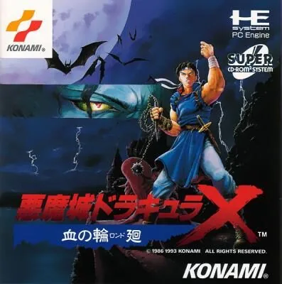
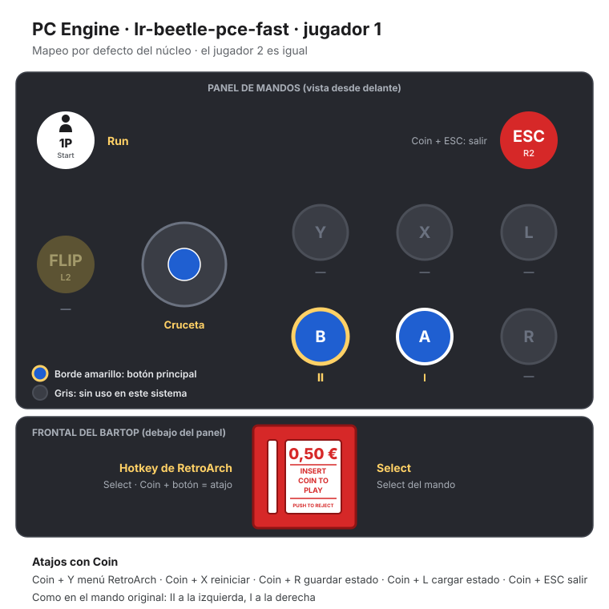
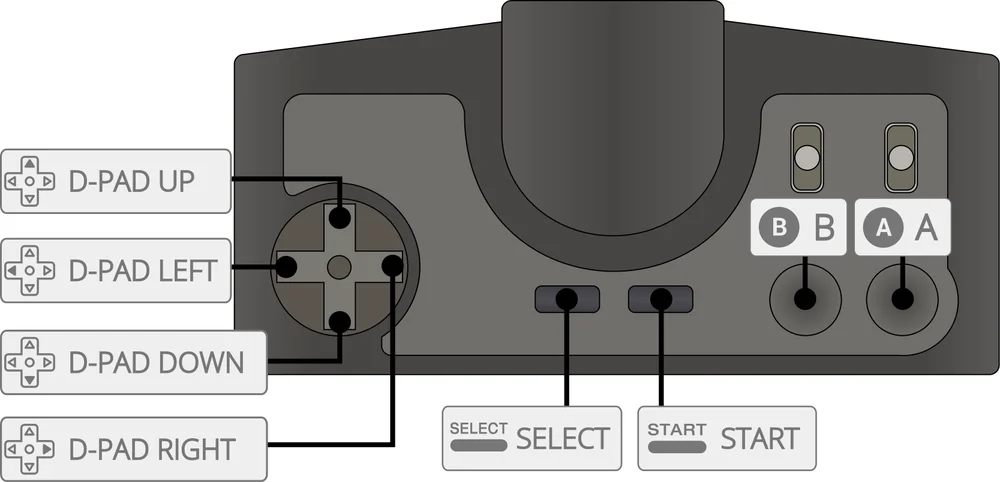

PC Engine
Akumajou Dracula X - Chi no Rondo
- Año: 1993
- Desarrollador: Konami
- Género: Plataformas
Rondo of Blood transcurre en 1792, en el universo de ficción de la saga Castlevania, cuyo eje es el eterno conflicto entre los cazavampiros del clan Belmont y el vampiro inmortal Drácula. El protagonista es Richter Belmont, de 19 años, heredero del látigo Vampire Killer y descendiente directo de Simon Belmont. Llega al castillo después de que Shaft, el siervo de Drácula, secuestre a su amada Annette. Dos veces a lo largo del juego, la Muerte, fiel lugarteniente de Drácula, intenta detener a Richter antes de que llegue hasta su señor. Por el camino, Richter libera a Maria Renard, hermana de Annette, una huérfana de 12 años que fue llevada al castillo con ella e insiste en acompañarle; a Terra, una monja que lo confunde con una manifestación de Dios; a Iris, la hija del médico del pueblo; y por último a Annette. Tras derrotar a Shaft y a la Muerte, Richter se enfrenta a Drácula y lo vence, y el castillo se derrumba en el mar.
Controles
que Richter se mueva con el joystick. Según las guías: B (II) ataca con el látigo, A (I) salta, arriba + B lanza el arma secundaria y Coin (Select) hace el Item Crash; 1P (Run) pausa. ¿Va fluido?
Mando de PC Engine: dos botones.
| Panel | Juego |
|---|---|
 | II |
 | I |
 | Run |
 | Select |
+  | Salir del juego |
El panel en PC Engine




Argumento
Recopilado de internet (2026-11-04). Lo marcado con ⚠️ no está probado en la bartop.
Año 1792. El vampiro Drácula ha vuelto a resucitar. Richter Belmont, de 19 años, heredero del látigo Vampire Killer y descendiente de Simon Belmont, va al castillo después de que Shaft, el sirviente de Drácula, rapte a su amada Annette como cebo.
Por el castillo, Richter vence a sus secuaces (la Muerte, un caballero sin cabeza, un minotauro…) y puede liberar a otras mujeres raptadas para alimentar a Drácula: su pariente Maria Renard, una huérfana de 12 años que insiste en acompañarle; Tera, una monja; Iris, la hija del médico del pueblo; y por último Annette.
Final: tras vencer a Shaft, Richter se enfrenta a Drácula, lo derrota y lo expone a la luz del sol, y el castillo se hunde en el mar mientras Richter huye a caballo.
Fuentes
Jugabilidad
Recopilado de internet (2026-11-04). Lo marcado con ⚠️ no está probado en la bartop.
- Plataformas y acción de Konami (1993, PC Engine Super CD-ROM²), en japonés; su secuela directa es Symphony of the Night, que reutiliza muchos de sus monstruos.
- Estructura: nueve fases con cuatro caminos alternativos: algunas tienen más de una salida, y eso cambia la fase siguiente y su jefe (ver «Guía de niveles»). El segundo camino tiene cinco fases ocultas, necesarias para el 100 % y para rescatar a todas.
- Armas: el látigo y un arma secundaria (hacha, daga, biblia, reloj de bolsillo, cruz o agua bendita), que gasta corazones.
- Item Crash: convierte el arma secundaria en un superataque.
- Maria: al rescatarla se puede jugar con ella: más ágil, con doble salto y el doble de daño, pero recibe mucho más; ataca con palomas y con animales (gatito tigre, dragoncito, fénix, tortuga, huevo y notas musicales), y tiene el golpe Guardian Knuckle.
- Sin tiempo límite en las fases.
Botones según las guías (⚠️ por confirmar)
| Mando de PC Engine | Panel | Acción |
|---|---|---|
| Cruceta | Moverse a los lados (abajo: agacharse; arriba: subir escaleras) | |
| II | | Atacar con el látigo |
| I | | Saltar (abajo + I: bajar de una escalera) |
| Arriba + II | + | Lanzar el arma secundaria |
| Select | | Hacer el Item Crash |
| Run | | Empezar · pausar |
| I, abajo, I | , , | Voltereta hacia atrás (Richter) |
| I I | | Doble salto (Maria) |
El Item Crash va en Coin, que es la tecla de los atajos de RetroArch: pulsado solo funciona, pero no hay que juntarlo con R, L, Y, X o ESC (guardar, cargar, menú, reiniciar o salir).
Guía de niveles
Recopilado de internet (2026-11-04). Lo marcado con ⚠️ no está probado en la bartop.
- Nueve fases, más las del camino alternativo; las fases tienen más de un final, y según por dónde se sale cambian la siguiente fase, sus enemigos y su jefe.
- Las fases con «'» (2', 3', 4', 5') son las del segundo camino.
- ⚠️ No he encontrado la lista completa de fases con sus nombres de esta versión: ver «Vídeos» y la guía de Castlevania: The Dracula X Chronicles de PSP, que es la nueva versión del mismo juego.
Fuentes
Objetos
Recopilado de internet (2026-11-04). Lo marcado con ⚠️ no está probado en la bartop.
| Objeto | Qué hace |
|---|---|
| Corazones | Munición del arma secundaria |
| Dinero | Puntos |
| Comida | Recupera vida |
| Armas secundarias | Hacha, daga, biblia, reloj de bolsillo, cruz, agua bendita |
Fuentes
Trucos y secretos
Recopilado de internet (2026-11-04). Lo marcado con ⚠️ no está probado en la bartop.
Secretos
- Maria jugable al rescatarla.
- Fases ocultas del segundo camino, necesarias para el 100 %.
- Akumajo Dracula Peke: un minijuego que sale si la consola no tiene la tarjeta de sistema necesaria (en la bartop no se ve, porque el emulador la tiene).
Fuentes
Longplay

Partida completa de la versión PC Engine CD (184 min), de World of Longplays, con Richter (las dos rutas) y con Maria: PC Engine Longplay 016: Akumajo Dracula X - Chi no Rondo.
Pulsa el minuto de un nivel para ver el vídeo desde ese punto.